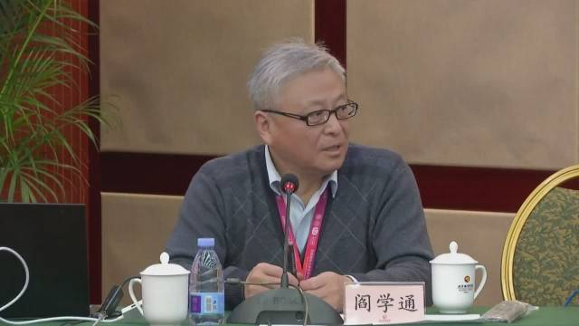

回复@vindywww:也对。这些00后都领会了“四个自信”重要思想非常到位。是阎教授没有学习到位，应该深刻检讨。//@vindywww:我倒觉得确实是许多学生的世界观随着时代变迁跟过去很不一样了，而这个观察结果跟阎老师的课是什么名声没什么关系。@圆的中心:#阎学通谈00后学生对世界认识特点#阎学通没有微博账号？这个总结有意思，但好像不是00后的特征，好多60后一样，反正我的同学同事好多都是这样认识世界的。认知偏差是怎样形成的？这个复杂了。 东莞 圆的中心的微博视频  50万次播放 07:59
阎学通教授关于00后学生中西两分和不懂得平视的的评价 网页链接 ，虽然显然我不认同他所引述的那些00后观点，但仔细想想，阎教授批评的视角更多反应出的是他的国际政治观点。搜索一下他写的文章，基本上每一篇都在谈中美争霸。中美争霸是中国外交的核心，而其他国家都是两大国博弈争夺的战略空间。他可以叫做大国博弈鹰派吧，自然是反对意识形态鹰派的，自然看不惯那些00后意识形态鹰派。但反过来说，阎教授似乎是将制度、文化、善恶都抽空了，不谈了。讲得好像否认“西方”的存在一样。保卫自己的世界霸权地位是不是美国压制中国的主要原因之一？当然是，并且很可能是最重要的原因。但真的就没有别的原因吗？西欧、日本等国家就真的在两个大国的博弈之间寻求战略利益，没有其他考虑吗？
俄国官方说战争进入第二阶段，更多占领乌东地区。这件事情怎么理解呢？有一件事情可以确定，就是俄军的部署确实是发生了符合这个策略的变化。但这是目标的调整还是战术变化，其实是不好说。FP的文章认为，普京不可能放弃颠覆乌克兰政权的目标。一切都是障眼法。很可能突然或者最终还是会回到攻击基辅的路线上来。
看起来美国官方和西方分析评论普遍认为俄乌双方都没有在认真谈判。想想看的确像是这样：俄国根本没有可能接受现在爆出的条件，如果可以接受当初就根本没必要打这场仗；在这场残酷的战争激发的乌克兰民众反俄高涨情绪下，不可能接受任何领土妥协。谈判就是做样子吧。
刚开战之后可以看到最可能的三种结果：1. 俄国颠覆乌克兰政权讲乌克兰变为附庸国； 2. 俄军全面撤出乌克兰； 3. 长期对峙。如果是 1和2，毫无疑问中国是最大的赢家。西方会将俄罗斯视为主要威胁，而被迫分散对中国的精力。甚至很多欧洲国家可能会回到亲中国的路线。但现在看来俄国已承认无法达成1的目标，而2也可能性渺茫——看来俄国内部的民意看来战争还是有比较高的支持率，除非普京病逝或者意外倒台这种小概率事件以外可能性较小。那么剩下的3对中国来说就比较微妙，因为俄罗斯的精力会被长期牵制在乌克兰，对俄国的制裁很可能会继续，一带一路也会遇到一些路线上的困难需要重新调整。在交战状态下平衡对俄罗斯和西方的关系，应该说也是更为微妙的。
在俄国调整目标之后，看起来最可能的情况是俄军尽量占领乌东更多的土地然后形成长期对峙了（无论是不是会签署停战协定）。乌军缺乏重型武器和空中力量，西方国家也没有打算提供的迹象，所以很难将俄军清除出乌克兰。这种情况下，大概率西方的严厉制裁也会长期继续。面对制裁，俄国必将希望中国帮助他们绕开制裁且通过对中国的贸易减小制裁的影响。西方国家也大概率会通过制裁中国的方式希望限制这种行为以保持对俄国的制裁效果。中国可能会陷入一种两难的境地：中国可能不愿意和西方世界减少贸易往来而和俄国形成独立的大循环，又不太可能愿意对俄国的要求说不。所以乌克兰局势发展的方向看起来并不是中国乐于看到的。
阎学通应该反思一下为什么都是这样的学生去选他的选修课。他的课是什么样的名声。//@贾汀糊:不只00后，很多“爹”也这样//@CyberZhiqi:@圆的中心:#阎学通谈00后学生对世界认识特点#阎学通没有微博账号？这个总结有意思，但好像不是00后的特征，好多60后一样，反正我的同学同事好多都是这样认识世界的。认知偏差是怎样形成的？这个复杂了。 东莞 圆的中心的微博视频 50万次播放 07:59
 东莞
东莞  圆的中心的微博视频
圆的中心的微博视频